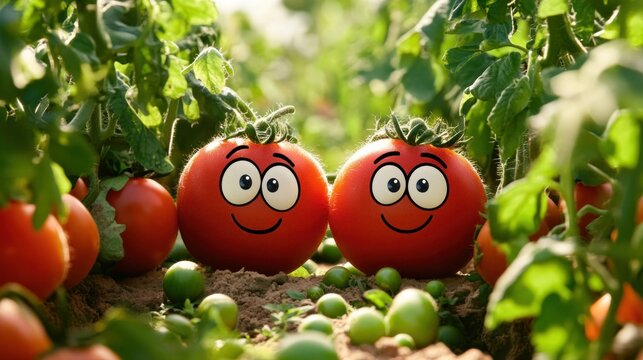
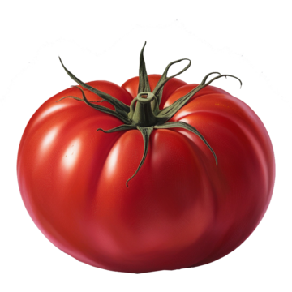
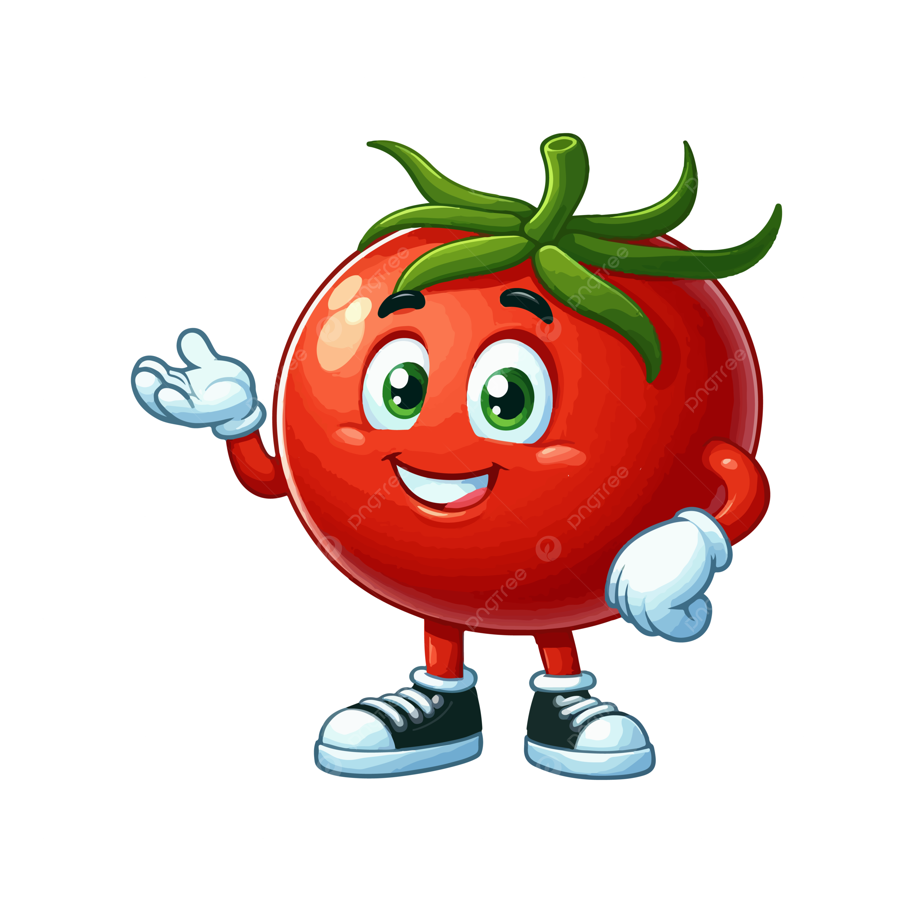

Your one-stop page to know more about me and my work.
About Me

Hello, I am John Doe, a passionate tomato with a love for creating beautiful and functional websites.
I have been working in the web development industry for over 5 years, and I am always eager to learn new technologies and improve my features.
My family and friends
Photo
Name
Description

Papa Tomato
My father, a hardworking and dedicated person who loves to spend time with the family.
Mama Tomato
My mother, a loving and caring individual who always knows how to brighten up the day.

Green head Tomato
My best friend since childhood, always there to support me no matter what.
Reddish Tomato
A close friend from college, passionate about travel and photography.
Scared Tomato
My sister, an aspiring artist with a great sense of creativity and imagination.
My features
Here are some of the features I have acquired over the years:
Rich in Vitamins (Vitamin C, Vitamin A, Vitamin K, and B vitamins)